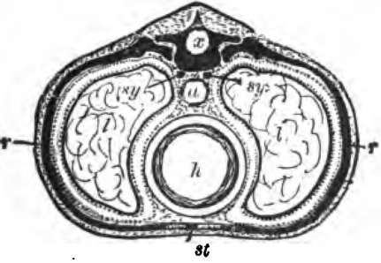
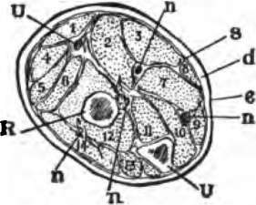

Contents Of The Two Chief Cavities Of The Body
Description
This section is from the book "The Human Body: An Elementary Text-Book Of Anatomy, Physiology, And Hygiene", by H. Newell Martin. Also available from Amazon: The Human Body.
Contents Of The Two Chief Cavities Of The Body
Examination of Fig. 1 shows that the ventral cavity is entirely closed itself, though some things which lie in it are hollow and communicate with the exterior. On the head we find the nose, i, and the mouth, o, opening on the ventral side; that is on that surface of the body next which the haemal cavity lies. The nose chamber joins the mouth chamber at the throat, and from the throat two tubes run down through the neck and enter the ventral cavity. One of these tubes, placed on the ventral side of the other, is the windpipe, and leads to the lungs, l; the other is the gullet, and leads to the stomach, f. From the stomach, another tube, the intestine, leads to the outside again at the lower or posterior † end of the trunk. Mouth, throat, gullet, stomach, and intestine, together form the alimentary canal, which, as we see, begins on the head quite above or anterior to the ventral cavity; then, at the bottom of the neck, enters the ventral cavity and runs on through it, to pass out again posteriorly; just as a tube might pass quite through a box, in at one end and out at the other, without opening into it at all. In addition to the lungs and the greater part of the alimentary canal, the ventral cavity contains several other things of which we shall have more to say presently; among the more important of them are, the heart, h ; the kidneys, k ; the sympathetic nerve centers, s ; and several large organs making juices which are conveyed by tubes into the alimentary canal and assist in digesting our food.
What fact in man's anatomy makes him a vertebrate animal? Name some other vertebrate animals. Name some invertebrates. How would sections made through invertebrates differ essentially from similar sections made through a man?
Is the ventral cavity open? Do any smaller cavities in. it open on the exterior of the body? What openings do we find on the head? What is the windpipe? To where does it lead? What is the intestine? What parts constitute the alimentary canal? Does this canal lie entirely within the haemal cavity?
* The main groups in which animals arc arranged are— 1. Vertebrata, or backboned animals. 2. Mollusca, including snails, slugs, clams, oysters. etc. 3. Arthropoda, including flies, moths, beetles, centipedes, lobsters, spiders, etc. 4. Vermes, including worms of various kinds. 5. Echinodermata (hedgehog-skinned animals), including- sea urchins, star fishes, etc. 6. Caelenterala, the sea-anemones and their allies. 7. The Protozoa; all microscopic and very simple in structure.
† In anatomy the head end of an animal is spoken of as anterior, and the opposite end as posterior, no matter what may be the natural standing position of the creature.
If we examined a section made across the trunk of the body, say about the level of the middle of the chest (Fig. 2), we would find, on the dorsal side, the neural tube, x, cut across, and in it the spinal cord, which is not represented in the figure. The thick black mass below the neural tube is part of the spinal column ; bounded by this dorsally, by a rib, r, r, on each side, and by the breastbone, st, on the ventral side (below in the figure) is the haemal cavity, containing the lungs, l, l; the heart, h; the gullet, a; and the sympathetic centers, sy.
Name some organs, in addition to parts of the alimentary canal, which are found in the ventral cavity. Describe what would-be seen on a section made across the body about the middle of the chest.
Fig. 2. A diagrammatic section across the body in the chest region, x, the dorsal lube, which contains the spinal cord; the black mass surrounding it is a vertebra; a, the gullet, a part of the alimentary canal: A, the heart; δy, sympathetic nervous system; ll, lungs; the dotted lines around them are the pleurae; rr, ribs; 6l, the breastbone.
Fig. 3. A section across the forearm a short distance below the elbow-joint. R and U, its two supporting bones, the radius and ulna: e, the epidermis and d, the dermis, of the skin; the latter is continuous below with bands of connective tissue, s, which penetrate between and invest the muscles, which are indicated by numbers, n, n, nerves and vessels.
The Limbs
If, instead of the trunk of the body, our section were made across one of the limbs, we should find no such arrangement of cavities on each side of a bony axis. The limbs have a supporting axis made of one or more bones (as seen at U and R, Fig. 3, which represents a section made across the forearm near the elbow joint), but around this axis soft parts, chiefly muscles, are closely packed ; and the whole, like the trunk, is enveloped by skin. The only cavities in the limbs are branching tubes, which are filled during life either with blood, or a watery-looking liquid known as lymph. These tubes, the blood and lymph vessels respectively, are not, however, characteristic of the limbs, for they also exist in abundance in head, neck and trunk.
How do the limbs differ from the trunk? How is each limb supported? Describe the parts exposed on a cross section of the forearm? What cavities exist in a limb? What do they contain? Are they found in other parts of the body?
Continue to: